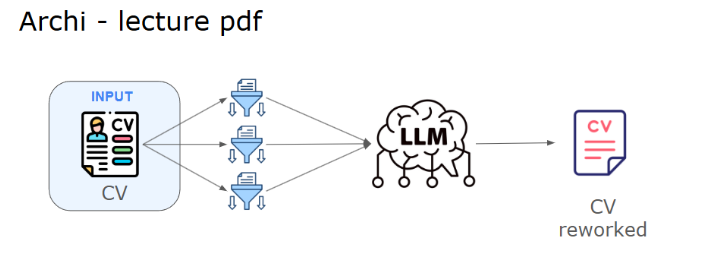
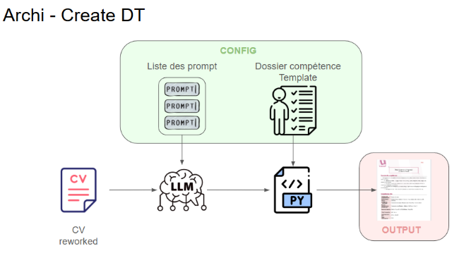

CVtoDT : Convertisseur CV en dossier de compétence
Résumé du projet
CVtoDT est une application qui permet de convertir des CV en dossiers de compétences. Grâce à l'intégration de modèles de Large Language Models (LLM), l'application analyse, réorganise et enrichit le contenu des CV. Le projet est conçu pour être déployé dans un environnement cloud avec une pipeline CI/CD, garantissant des mises à jour fluides et une disponibilité continue.
Structure de la solution
Fonctionnalités principales
- Conversion automatisée : Transformez vos CV en dossier de compétence.
- Enrichissement intelligent : Reformatage et réécriture par une IA.
- Interface intuitive : Téléchargez, convertissez et récupérez vos fichiers en quelques clics.
Technologies utilisées
- Python : Backend FastAPI pour la gestion des requêtes.
- OpenAI API : Analyse et enrichissement des CV.
- AWS App Runner : Hébergement de l’application.
- Docker : Conteneurisation pour une déployabilité rapide.
- CI/CD avec GitHub Actions : Automatisation des mises à jour.
Points forts du projet
- Sécurité : Utilisation de tokens Bearer pour protéger les API.
- Performance : Traitement des fichiers rapide et fiable.
- Scalabilité : Déployé sur AWS avec prise en charge d'une montée en charge.
Liens associés
Galerie

